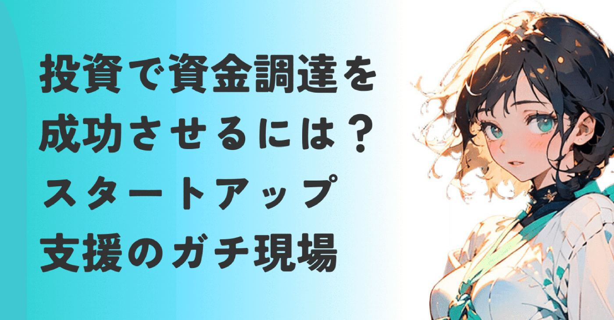
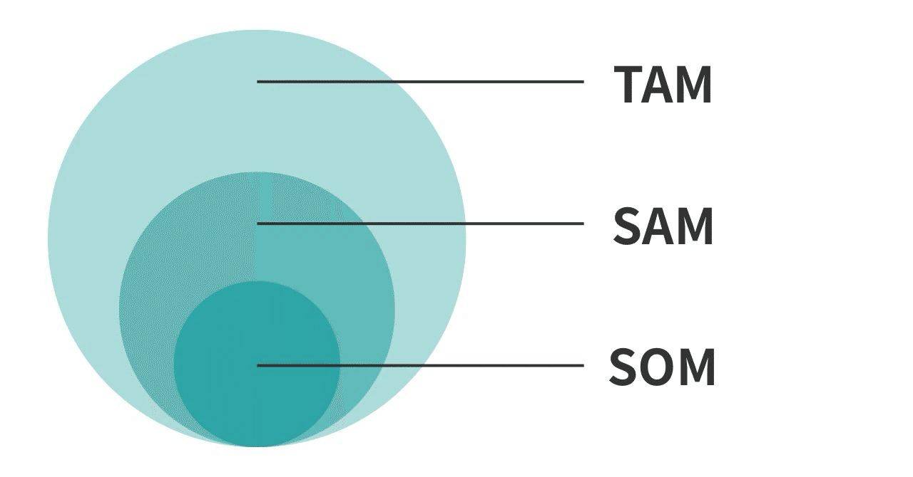

たまには現場の話でも。
起業家の最もよく聞く要望の1つが資金調達。
特に投資ですね。
初期のスタートアップとベンチャーキャピタル(投資会社、以下VC)との面談に同席すると、やり取りはいつも緊張感に満ちています。
ここでまず、私がVCに紹介する起業家について重要な前提があります。
私は、アイデア段階の起業家をVCに紹介したことはありません。
紹介するのは、
試作品が完成し、PMF(市場にサービスや製品が受け入れられた状態)の兆し
が見えている起業家のみ。
こちらでその兆しについて語ってます▼
https://note.com/alive_sheep6563/n/ne8ba4f2fe97e
理由は、アイデア段階の起業家に会いたいというVCを紹介できないからです。
VCも相性があるから…
決まった条件の起業家に投資したい、という思いがある。
「売れる…！！」という手応えを掴み、最初の一歩を踏み出している、まさにこれから成長する道を歩み出す起業家たち。
しかしながらこのフィルターを通った精鋭たちにも、VCとの面談で「今回はこの辺で。」となってしまうケースが少なくない。
というか体感８割くらいかな？
サービス/製品も、チームも、実績も悪くない。
それなのに、面談開始後の数十分で投資家の顔が曇り、事実上の足切りになってしまう。
この先には、投資検討へ進んだ起業家がどうやって足切りを回避し面談を乗り越えていったのか、回答例を交えて解説してます。
５年間、紹介と同席を続けて見えてきた
足切りに共通する理由は、
市場規模への解像度の低さ
です。
製品やサービスが優れていることも重要なんですが、VCが投資できる事業の器を持っていることも示さないといけないんです。
VCが求める「最低限のTAM」という名の障壁
多くのシード期の起業家には、
PMFが見えているのが1つの基準と考える人が多いように思います。
しかしながらVCの目線は成功の先、
イグジット（M&AやIPO）
を見据えています。
VCは投資した資金に対して、10倍20倍といったリターンが必要。
このリターンを生み出すためには、事業が爆発的に成長し、最終的に数千億円以上の価値を持つ企業になる必要があります。
つまり、顧客を獲得できる最大規模の市場(TAM)をどこまで広げられるかにかかってる。
TAM•SAM•SOMとは、ターゲットにしたい顧客の市場を指します。

TAM（獲得可能な最大市場）
一番外側の円であるTotal Addressable Marketの略。理論上で獲得できる最大の市場規模です。
SAM（事業が獲得可能な有効市場）
真ん中の円であるServiceable Available Marketの略。
TAMのうち、あなたのサービスやビジネスモデルで対応可能な範囲です。
SOM（事業が実際に獲得可能な市場）
最も内側の円であるServiceable Obtainable Marketの略。
SAMのうち、現時点での手持ちの力と戦略で、現実的に獲得できる顧客層です。
顧客獲得の市場については、
こちらでも詳しく語ってます▼
https://note.com/alive_sheep6563/n/n5e2ea8411af4
あるVCは、投資を検討する市場の最低水準として3,000億円規模を求めていました。
企業価値が数百億円で頭打ちになるなら、ハイリスクなシード投資をする意味がないんですよね。
サービスや製品がどんなに優れていても、
顧客を獲得できる市場がVCの求める規模に届いていなければ、投資対象から外れてしまう。
これが、PMFが順調な起業家がVC面談につまずく現実かなという実感です。
終わる人は、TAMが「市場調査の結果」で終わっている
さらに、面談が短時間で終わってしまう起業家の共通点を深掘りすると。
市場の数字が事業に最適化されてないことに気づきました。
例えば外部の市場調査レポートや統計データから、「日本のBtoB SaaS市場は2兆円です」といった巨大な数字を提示したとすると。
しかし、VCがその根拠を尋ねた途端、回答に窮してしまいます。
深く切り込むべきは、
その市場をどう定義し、どう切り取り、
なぜその数字になると思うのか
という、起業家独自の視点です。
投資対象になれない人は、市場を外部の権威が認めた大きな数字として持ち込みます。
そしてVCに、この起業家は市場を自分の事業として捉えきれていないと見透かされて終了。
VCは市場規模を語る数字ではなく、その数字に込もった起業家の解像度に投資するのです。
進む人はSOMの成功を未来のTAMに接続できている
一方で、面談が順調に進み、次回の検討に進む起業家は、市場の捉え方が根本的に違う。
彼らは、まず
自分たちが今どこの市場を獲っているかを
ボトムアップで超具体的に示します。
特に具体的に彼らが話すのはSOMの方です。
内容はぼかしますが、例えば
私たちは今、従業員数10名から30名の製造業に特化した〇〇ツールを提供しています。
現在の顧客単価は月額5万円。
このターゲットセグメントの顧客数は全国で3,500社あります。
なので市場のSOMは年間21億円です。
といった感じ。
自社の顧客データ、営業戦略、
そしてプロダクトの具体的な機能と紐づく、
自分たちが作った数字で語るんですね。
彼らは、この初期のSOMでの成功を、
VCが求めるTAMにどう接続するかという
拡張戦略を明確に提示します。
ステップ1（短期）
このSOMでPMFを確立後、得られたデータと資金で、「従業員数50名までの中小企業」へと対象を広げる（SAMの拡張）。
ステップ2（中期）
隣接する業界へ横展開する（TAMの水平拡張）。
ステップ3（長期）
業界のデータを活用したサービスなど、別領域へ垂直展開し、TAMの全体像を一気に広げる。
このように、ニッチからどうやってより大きな市場へと成長していくかという具体的なロードマップを示せるかどうかが1つの鍵。
まさに人を魅せる、
美しすぎるピッチ(プレゼン)。
これがVCの検討を進める起業家が持つ、決定的な武器なのです。聞いてる私は1人感極まっています。
VCからの「市場が狭い」への切り返し例
VCは起業家の思考力を測るために、意図的に厳しい質問を投げかけます。
それはもう、同席してる私も心臓がギュンっと痛くなるド直球っぷり。
よく覚えているのが、議論を裏付けるように、
「この市場、正直言って狭いよね？」という問い。
言われてるようなもんだもの。
たいていの起業家はこの質問に戸惑います。
「いや、実は市場はもっと大きくて…」
「これから市場は成長するので…」
と、曖昧であっても未来の希望を語れるなら、まだ冷静に対処できてると思う。
ある起業家は何も語れなくなってしまった。
「あ〜…そうですね。」みたいな。
戸惑わない起業家はですね、
既にVC面談を経験して答えを用意している
質問を意図的に言わせた肝の座った戦略家
のどちらかのパターンじゃないかな。
いずれにせよ面談を進める起業家は、この質問に対し深掘りという姿勢で臨みます。
VCの指摘をネガティブに捉えない。
待ってましたとばかりに、事業の強みをアピールする機会と捉えます。心臓が強い。
ぼかしますが、こんな感じで切り返します。
ご指摘の通りです。現時点(強調)では、我々のSOMは〇〇億円と、TAM全体から見れば非常にニッチです。
だからこそ競合不在のまま、まずこのニッチ市場のシェア80%を獲りに行きます。
そして、その後に◯◯業界への横展開とメイン業界への垂直展開という2つの拡張戦略によって、5年後には3,000億円市場の1%に到達できると見込んでいます。
このように、
現状の狭さを受け入れた上で、将来の広がりを具体的な戦略と数字で示せるかどうか。
VCは起業家が問題を認識し、それに対する明確な解決策を持っているかを見ているんです。
PMFが次のステージに進むためには
PMFは、スタートラインです。
良いサービス/製品ができた
最初の顧客に価値を提供できている
という事実は、VCも評価しています。
PMFを達成できるのは、起業家として確かなスキルがある証拠の1つ。
その一方で、一定の市場規模で収益を出せることを論理的に語れるかも見ています。
私も起業家とVCを紹介する時には、前段階として以下の質問を投げるようにしました。
あなたが狙うTAMは、VCが投資できそうな最低ライン（例えば3,000億円）を超えていますか？
そのTAMの数字は、外部レポートではなく、あなたの顧客データと営業戦略からボトムアップで再構築されていますか？
現在のSOMでの成功から、将来の大きなTAMに拡張するまでの具体的なロードマップ（拡張戦略）を説明できますか？
この3つの質問に、曖牲な言葉ではなく、具体的な数字と行動計画で答えられること。
面談で一歩前に進む起業家は、熱量だけではなく解像度で未来を語ります。
もし起業を考える方や起業家の方が読んでくださっていたら。
プロダクト/サービスが持つ可能性を、VCが求める解像度で再定義し、資金調達という次のステージへ踏み出すことを願ってます。
起業家ではないけれど読んでくださった方、
ここまでお付き合いいただき感謝です。
新サービスや製品が世に出るまで、
起業家たちはこういう厳しい場面を乗り越えてるんだと知ってもらえたら嬉しいです♫
今日も読んでいただきありがとうございます！
感想・質問などなど、お気軽にどうぞ♪
経験者さまがもし読んでいたら。
差し支えない範囲で体験談を教えてください！
コメント欄でお待ちしてます！